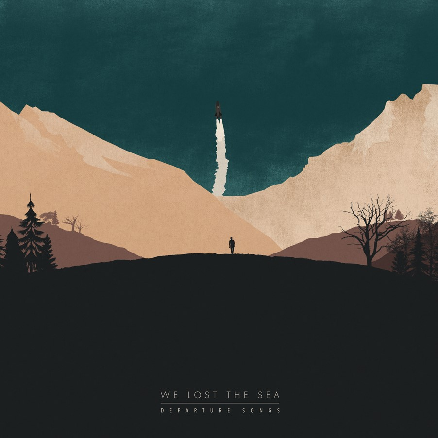

A great leap forward from their funereal debut album, Power, Corruption & Lies cemented New Order's place as the most exciting dance-rock hybrid in music. Confident and invigorating, the record simply pops with energy from the beginning.
Power, Corruption & Lies
New Order
True Panther Sounds
Post Rock
On the surface, Departure Songs may appear as a tedious work of post rock with long buildups that drag. However, its true potential unveils after repeated listens. Instead, the album is a passionate, dedicated and organic send off to a dearly departed friend.

Departure Songs
We Lost The Sea
We Lost The Sea
Post Rock
In addition to the principal narrator there are several sections narrated by other characters entirely, such as the story of the Grand Inquisitor and Zosima's confessions. This technique enhances the theme of truth, making many aspects of the tale completely subjective.
Don't Forget The Kids
We Karamazov
More often than not, ambitious left-of-the-dial bands gallantly cling to their principles as they plunge into the depths of commercial failure. Integrity is a heavy burden for those trying to scale the charts.
Nevermind
Nirvana
Concord / Virgin EMI
Post Rock
The perfect ending to a recording career, this LP shows a band still in its prime, capable of songwriting and recording feats others could only envy.
The Dark Side of the Moon is a fine album with a textural and conceptual richness that not only invites, but demands involvement. It has flash-the true flash that comes from the excellence of a superb performance.
The Dark Side of the Moon
Pink Floyd